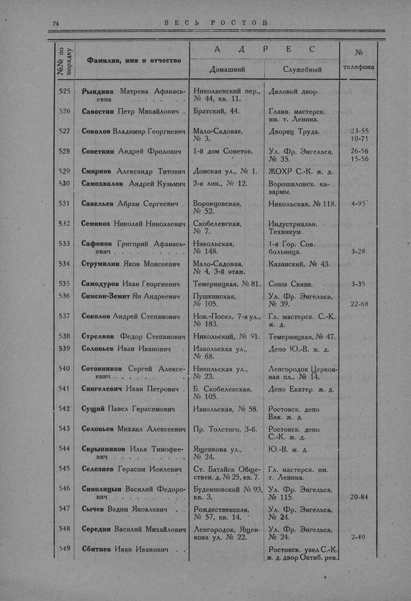

Лист источника 72
Скан

Распознанный текст
24 В Е С Ь Р О С Т О В
№№ по порядку Фамилия, имя и отчество А Д Р Е С № телефона
Домашний Служебный
525 Рындина Матрена Афанась-евна . . . . . . . Николаевский пер., № 44, кв. 11. Деловой двор.
526 Савостин Петр Михайлович . Братский, 44. Главн. мастерск. им. т. Ленина.
527 Соколов Владимир Георгиевич Мало-Садовая, № 3. Дворец Труда. 23-55 10-71
528 Советкин Андрей Фролович 1-й дом Советов. Ул. Фр. Энгельса, № 35. 26-56 15-56
529 Смирнов Александр Титович Донская ул., № 1. ЖОХР С.-К. ж. д.
530 Самохвалов Андрей Кузьмич 2-я лин., № 12. Ворошиловск. ка-зармы.
531 Савельев Абрам Сергеевич . Воронцовская, № 52. Никольская, № 118. 4-95
532 Семикоз Николай Николаевич Скобелевская, № 7. Индустриальн. Техникум.
533 Сафонов Григорий Афанась-евич . . . . . . . Никольская, № 148. 1-я Гор. Сов. больница. 3-28
534 Струмилин Яков Моисеевич Мало-Садовая, № 4, 3-й этаж. Казанский, № 43.
535 Самодуров Иван Георгиевич Темерницкая, № 81. Союз Связи. 3-35
536 Симсон-Земит Ян Андреевич . Пушкинская, № 105. Ул. Фр. Энгельса, № 39. 22-68
537 Соколов Андрей Степанович . Нов.-Посел. 7-я ул., № 183. Гл. мастерск. С.-К. ж. д.
538 Стрелков Федор Степанович Никольский, № 91. Темерницкая, № 47.
539 Соловьев Иван Иванович Извольская ул., № 68. Депо Ю.-В. ж. д.
540 Сотовников Сергей Алексе-евич . . . . . . . Никольская ул., № 23. Ленгородок Церков-ная пл., № 14.
541 Сингелевич Иван Петрович . Б. Скобелевская, № 105. Депо Екатер. ж. д.
542 Сущий Павел Герасимович . Извольская, № 58. Ростовск. депо Влк. ж. д.
543 Соловьев Михаил Алексеевич Пр. Толстого, 3-б. Ростовск. депо С.-К. ж. д.
544 Скрыпников Илья Тимофее-вич . . . . . . . Ященкова ул., № 24. Ю.-В. ж. д.
545 Селезнев Герасим Иовлевич Ст. Батайск Обще-ствен. д. № 25, кв. 7. Гл. мастерск. им. т. Ленина.
546 Синолицын Василий Федоро-вич . . . . . . . Буденновский № 93, кв. 3. Ул. Фр. Энгельса, № 115. 20-84
547 Сычев Вадим Яковлевич . Рождественская, № 57, кв. 14. Ул. Фр. Энгельса, № 24.
548 Середин Василий Михайлович Ленгородок, Ящен-кова ул. № 22. Ул. Фр. Энгельса, № 24. 2-40
549 Сбитнев Иван Иванович . Ростовск. узел С.-К. ж. д. двор Октяб. рев.